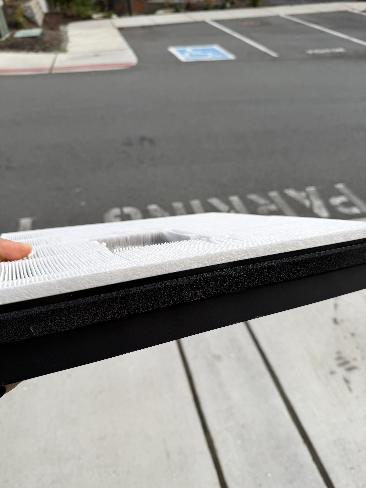
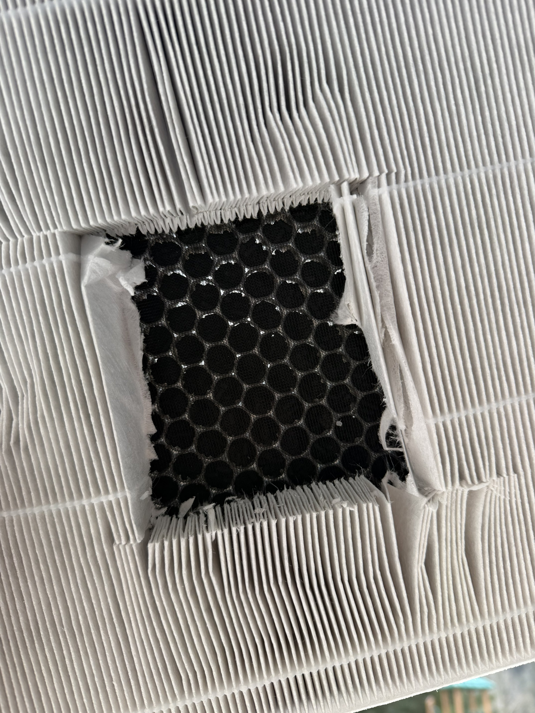
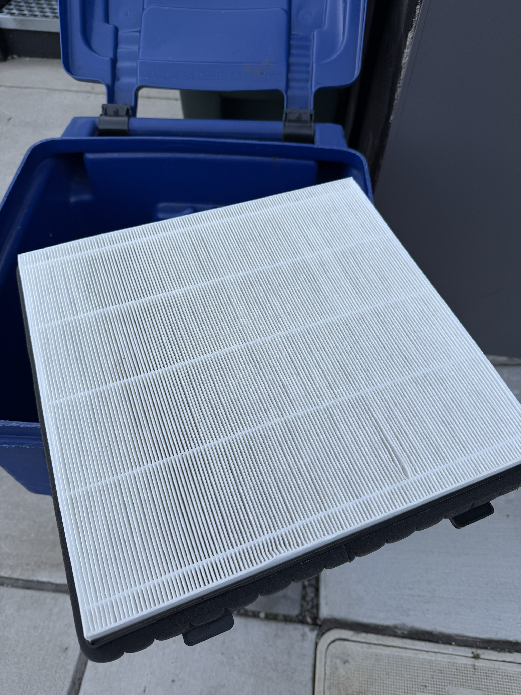

Cabin Air Filters — OEM vs Aftermarket
The Cybertruck's HEPA cabin air filter is a combined HEPA + activated carbon unit. It handles particulates (dust, pollen) and odors (exhaust fumes, diesel). I've tested three aftermarket replacements against the Tesla OEM filter. None of them held up.
The Problem with Aftermarket Filters
Every aftermarket filter I tested shares the same weakness: a thin, low-quality activated carbon layer. The HEPA filtration (particulates) works fine at first, but the carbon layer — the part that absorbs gas and diesel fumes — degrades within a couple months. After that, you'll start smelling exhaust from other vehicles inside the cabin, even with the windows up and recirculation on.
Filters Tested
Lectron
The Lectron uses an aggregate-style carbon layer — if you hold it up to the light, you can see right through it. It lasted about 6 months before gas and diesel odors became noticeable inside the cabin.


Basenor
The Basenor lasted only 3.5 months before exhaust fumes started coming through. Particulate filtration is adequate, but the carbon layer is insufficient for any real longevity.

EVAnnex
The EVAnnex feels the lowest quality of all three. Build quality is noticeably worse than both the Lectron and Basenor, and the carbon performance is no better.
Recommendation
Buy the Tesla OEM filter. It's ~$100 from the Tesla Shop and the activated carbon layer is significantly thicker and denser. It's the only filter that reliably blocks exhaust odors for the full replacement interval. Replace every 2 years or as needed if you're driving in heavy dust or pollution.
ⓘ Note
This comparison is based on real-world driving in the Pacific Northwest. The Lectron went through a West Coast road trip before failing at 6 months. The Basenor and EVAnnex were used for around-town driving only. Results may vary, but the carbon layer quality difference is visible and measurable regardless.